Special Functions librarySpecial Functions library
Special Functions librarySpecial Functions library
現在このライブラリは5つの"特殊な"数学関数を、boost名前空間で、テンプレートとして提供している。この内、シンク関数とハイパボリックシンク関数(sinc_pi, sinhc_pi)は四元数と八元数を実装するのに必要である。
逆双曲関数( acosh, asinh, atanh )は
全体的に古典的であり、シンク関数( sinc_pi )は信号処理の作業で
よく使われるようだ。また、双曲シンク関数( sinhc_pi )は、
シンク関数( sinc_pi )と双曲関数( sinh, cosh, tanh )から
名付けられており、アドホックな関数で
ある。
指数関数は、その意味が通る全ての対象に対して、 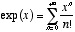 という級数関数で定義される。ここで、 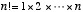 ( 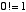 を自明とする)は 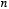 の階乗である。特に、指数関数は、実数、複素数、四 元数、八元数、複素数を 要素にもつ行列に対して、自然に定義される。
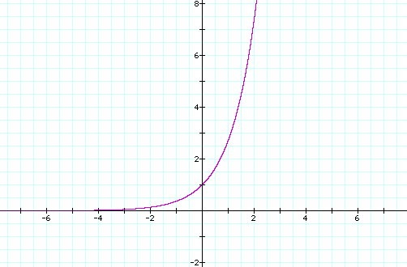
実数Rを変数にとった指数関数expのグラフ
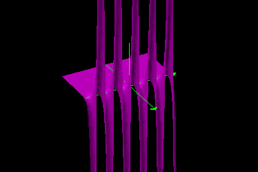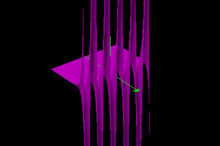
複素数Cを変数にとった指数関数expの実部と虚部
双曲関数は、(実数、複素数、四元数、八元数のために)数値計算可能な級数関数として以下のように定義する：
双曲余弦関数： 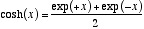
双曲余弦関数： 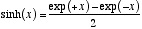
双曲正接関数： 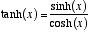
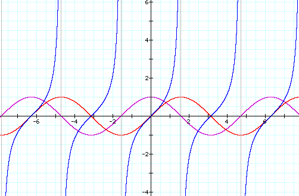
実数Rを変数にとった三角関数 (cos: 紫; sin: 赤; tan: 青)
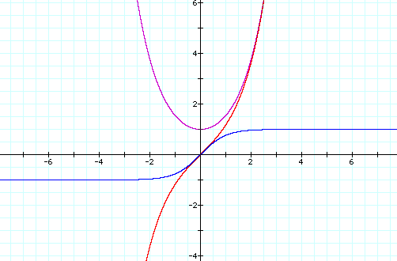
実数Rを変数にとった双曲関数(cosh: 紫; sinh: 赤; tanh: 青)
双曲正弦関数は無限小から無限大までの範囲の実数上で一対一対応である。
一方で、双曲正接関数は
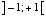
の範囲の実数上で一対一対応である。そして、この二つの関数は逆関数を持っている。
双曲余弦関数は、
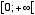
の範囲の実数上では
 の範囲で、また
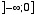
の範囲の実数上では
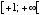
の範囲で一対一対応である。ここで使う逆関数は変域
の範囲で、また
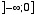
の範囲の実数上では
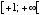
の範囲で一対一対応である。ここで使う逆関数は変域
 、値域
、値域
 で定義される。
で定義される。
双曲正接関数の逆関数は逆双曲正接関数と呼び、数値計算では次のように扱う。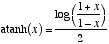
双曲正弦関数の逆関数は逆双曲正弦関数と呼び、数値計算では次のように扱う。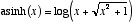 ただし 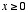 である。
双曲余弦関数の逆関数は逆双曲余弦関数と呼び、数値計算では次のように扱う。
シンク関数は指数関数によって次のように定義される。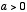のとき 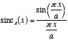
我々は類似のものとして双曲シンク関数を指数関数によって次のように定義する。
 のとき 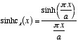
これもまた滑かな曲線を描く関数である。
のとき 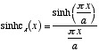
これもまた滑かな曲線を描く関数である。
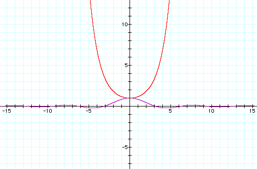
実数Rを変数にとり、πを要素に持つシンク関数(紫)と双曲シンク関数(赤)
数式の編集には Nisus Writer を、 グラフ等の編集には Graphing Calculator を使用した。Jens Maurer氏にはプレビューの管理で協力して戴いた。 諸々の感謝については History の部分で述べる。 このライブラリを議論し協力してくださった方々に感謝する。
次のヘッダ一つ一つが、それぞれの関数のインターフェースと実装を提供する：
テストプログラムspecial_functions_test.cppは、float, double, long double型での関数のテストを行なう。(出力サンプル)
以下の環境で動作確認をした：
- PowerPC G3 -- CodeWarrior for Mac OS Professional Edition v6(Metroworks)
namespace boost
{
namespace math
{
template<typename T> inline T acosh(const T x);
template<typename T> inline T asinh(const T x);
template<typename T> inline T atanh(const T x);
template<typename T> inline T sinc_pi(const T x);
template<typename T, template<typename> class U> inline U<T> sinc_pi(const U<T> x);
template<typename T> inline T sinhc_pi(const T x);
template<typename T, template<typename> class U> inline U<T> sinhc_pi(const U<T> x);
}
}ここで実装される関数は標準例外を投げるが、例外指定子は作られていない。
template<typename T> inline T acosh(const T x);
での双曲余弦関数の逆関数を、変数を
xとして数値計算する。 精度を確保するため、1付近ではテイラー級数を使い、無限大付近ではローレンツ級数を使っている。
xが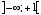であるなら、 例外を発生せずにNaNを返す。環境によっては、代わりにドメインエラーが発生する。
template<typename T> inline T asinh(const T x);双曲正弦関数の逆関数を数値計算する。精度を確保するため、原点付近では テイラー級数を使い、無限大付近ではローレンツ級数を使っている。
template<typename T> inline T atanh(const T x);双曲正接関数の逆関数を数値計算する。精度を確保するため、原点付近ではテイラー 級数を使っている。
xの範囲が 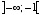 もしくは 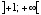 ならば、例外を発生せずにNaNを返す。環境によっては、代わりにドメインエラーが 発生する。
xの範囲が 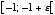 ならば、無限小(numeric_limits<T>::epsilon()を意味する 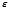 を返す。環境によっては、out_of_range例外が発生する。
xの範囲が 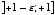 ならば、無限大(numeric_limits<T>::epsilon()を意味する を返す。環境によっては、out_of_range例外が発生する。
template<typename T> inline T sinc_pi(const T x);template<typename T, template<typename> class U> inline U<T> sinc_pi(const U<T> x);シンク関数を数値計算する。二つめの書式は複素数、四元数、八元数等のため のものである。精度を確保するため、テイラー級数を使っている。
template<typename T> inline T sinhc_pi(const T x);template<typename T, template<typename> class U> inline U<T> sinhc_pi(const U<T> x);双曲シンク関数を数値計算する。 二つめの書式は複素数、四元数、八元数等のため のものである。精度を確保するため、テイラー級数を使っている。
acosh, asinh
を追加。John Maddock氏が提案したGcc 2.9.xのための修正を適用。精度が向上。
テストプログラムにより精度を検査。
math名前空間を導入。
special_functions.hppを
atanh.hpp, sinc.hpp, sinhc.hppに分割。
Daryle Walker氏により、コンパイルタイムを駆使しatanhの効率が向上。
Peter Schmitteckert氏により、全ての関数の精度が向上。
訳注
アドホックな：双曲シンク関数は
双曲正弦関数やシンク関数のように学会で名前の通った関数ではない。
Revised 27 September 2001
© Copyright Hubert Holin 2001. Permission to copy, use, modify, sell and distribute this document is granted provided this copyright notice appears in all copies. This software is provided "as is" without express or implied warranty, and with no claim as to its suitability for any purpose.
Japanese Translation Copyright (C) 2003 Mikmai Hayato<fermi_kami@ybb.ne.jp>. オリジナルの、及びこの著作権表示が全ての複製の中に現れる限り、この文書の 複製、利用、変更、販売そして配布を認める。このドキュメントは「あるがまま」 に提供されており、いかなる明示的、暗黙的保証も行わない。また、 いかなる目的に対しても、その利用が適していることを関知しない。